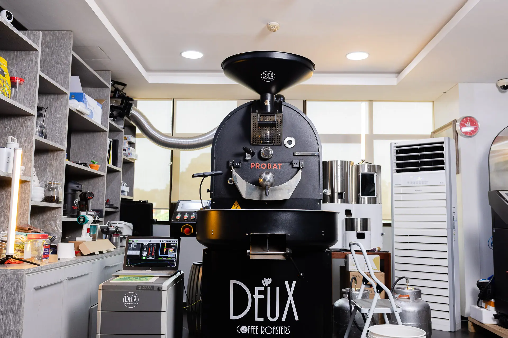
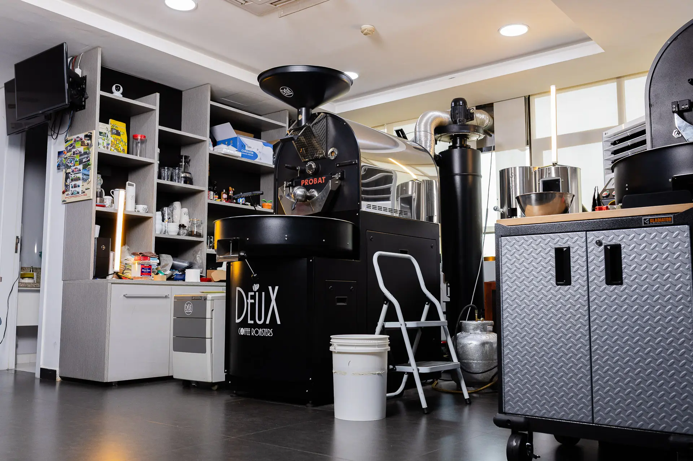
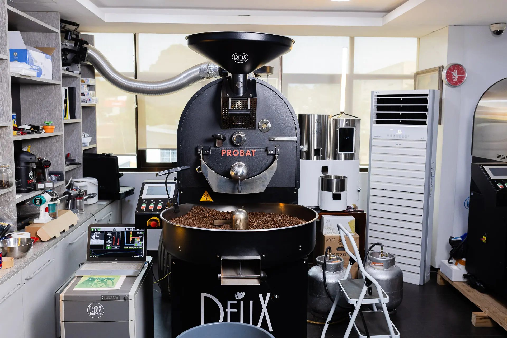
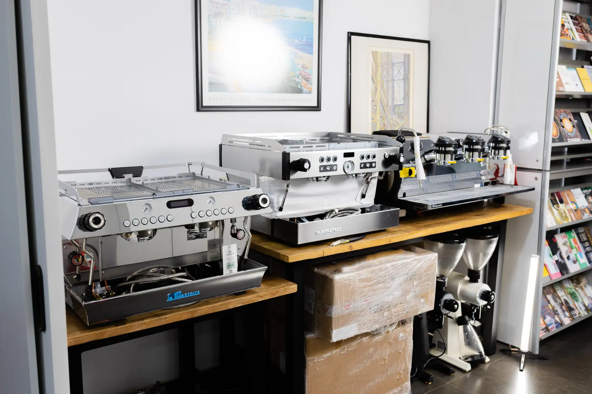
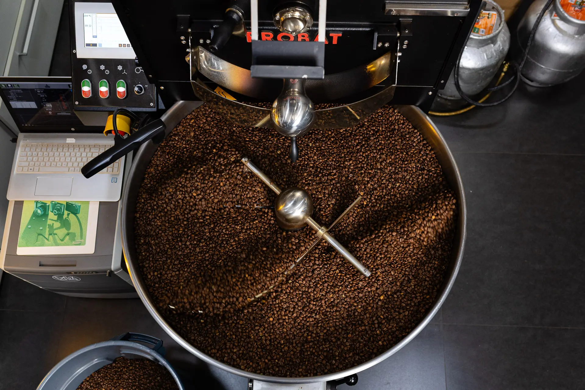
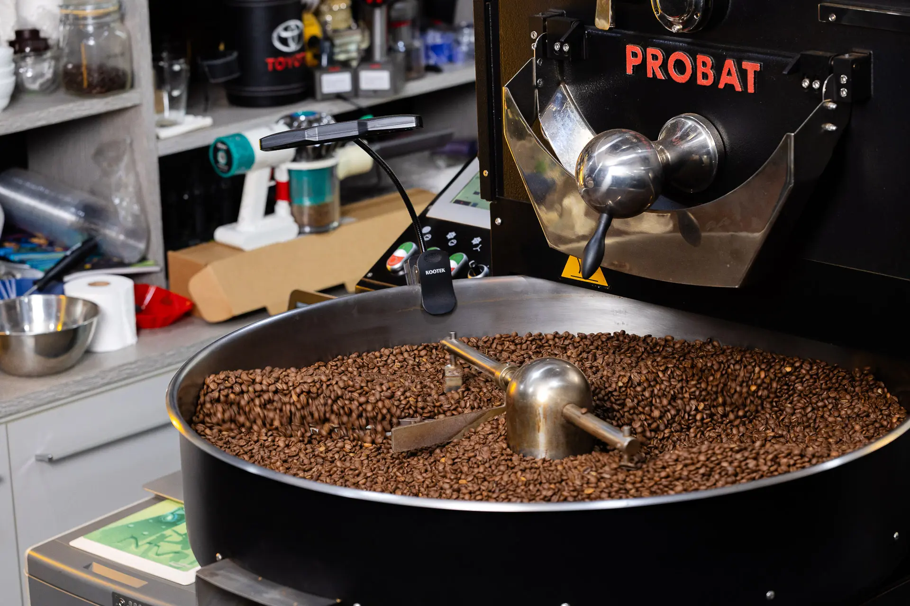

Quiénes somos
Nacimos en 2017
Nacimos con el propósito de ser una cafetería moderna y ofrecer una experiencia única y positiva. Desde el compromiso de brindar un café de la mejor calidad y recién tostado, combinado con un ambiente acogedor para relajarse y disfrutar de un momento de calidad en compañía de amigos o de un buen café.
Un espacio minimalista, con arquitectura moderna y urbana, crea un entorno único y exclusivo en nuestras tiendas.

Nuestro café
Del grano al tueste
Con los más altos estándares de calidad de cultivo, nuestros granos de tipo Arábica se recolectan a mano y son secados en proceso natural fermentado, revelando solo granos con una puntuación superior a 86 puntos según la SCA.
Nuestro proceso de tostado es un delicado equilibrio entre tiempo y temperatura. Nuestros baristas están capacitados para ofrecer una perfecta extracción en cada taza.
El obrador
Tostado propio, en casa
Cada lote pasa por nuestra tostadora Probat, donde controlamos la curva de tueste grano por grano. Así conseguimos el perfil que llega a cada una de nuestras sucursales.




¿Listo para tu próximo café?
Escribinos por WhatsApp para pedidos, consultas o para saber qué sucursal te queda más cerca.